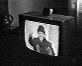

- image -
 |
The Borderline Cartoons, where the artist says that you can use his cartoons for free on anything with no royalties. BSA Clip Art, where you can find Boy Scouts related clip art. Castle Image Archive, a large collection of photos and illustrations of castles. Christmas Clip Art by the Celtic Lady where the free clip art is a teaser for other things. The Clip Art Connection, offers several online clip art collections. |
periodicals from 1898 to 1902 dealing with the wars and empire, compiled by Jim Zwick. The Philippine-American War Colorized Sixty-three colorized photographs from the war that were published in The United States of the World (1902). Theodore Roosevelt and the Image of Empire A collection of political cartoons from 1898 onward that shows how Roosevelt's image was transformed during and after the Spanish-American War until he was the personification of American imperialism. Presidents Including photographs of presidents William McKinley, Theodore Roosevelt and William H. A political cartoon published in the Minneapolis Journal in 1900 showing the imperial wars being fought at the turn of the century in Asia, the Middle East, and Africa.
|  |
|
This has more than nothing, it has absolutely nothing to do with LIVE transmission. Not only are we not also involved in the on-screen shooting process, indeed we are the targets of these real-time images of missile strikes. When it is impossible to distinguish between photographed and simulated images then it is not only the images that have been removed from their spatial coordinates, but we too and time as a quality of the image becomes fictitious. During real-time process we cease to exist as historical beings and become caught up in the computer simulation even though we are living creatures. It becomes potentially impossible to decide whether something occurs and what occurs and whether it occurs at the same time we see it. |
|
Rather than simply film the filmmaking process and create a mise-en-abime a la Vertov (as powerful as this technique in The Man with the Movie Camera is), Farocki films many proliferating technologies and interrogates historical stages of their development; he charts the relation of the human body to these machines, which are seen as extensions of senses and organs. This model forms a kind of counter-model to the splurge of images, new and always the same, of the media-at-large. Surfeit, superabundance on the one hand, a longer meditation on isolated images such as produced in Vietnam (in the image industry coming out of that war), on the other. her pamphlet "handed out at Fehrberliner Platz" as counter-information. The same image put to two radically different uses, and yet within the same curtailing process of the image by language, by the caption. |
also look at: http://www.nara.gov/exhall/americanimage/panorama/panoram3.html